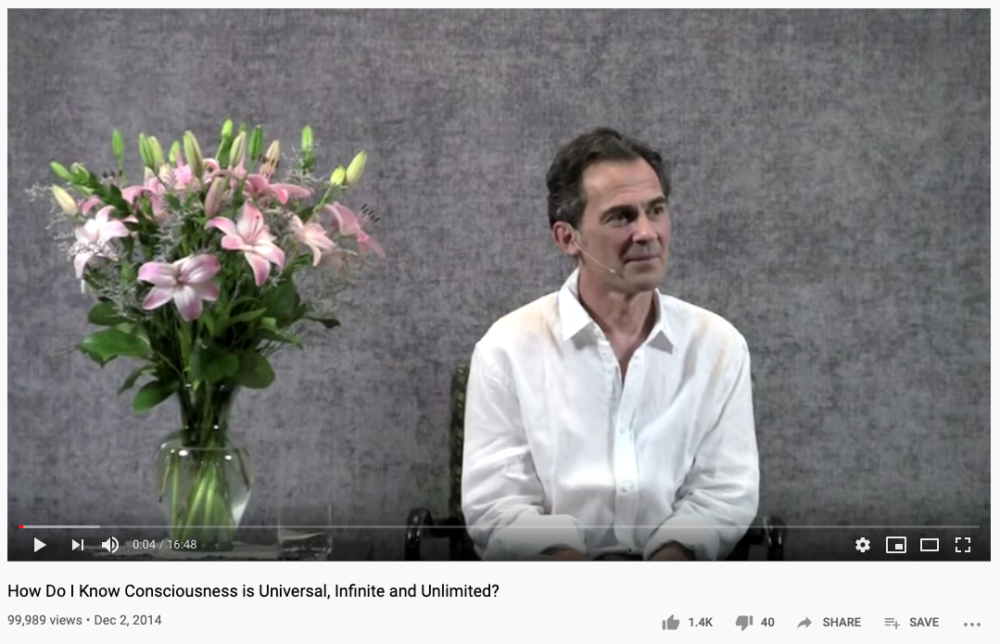

##! 5 March Thu
So I woke up at 6 am today, and then slept at 5pm until 7.30pm. In the morning I was rereading the idio article about hot reload, and thought about the links shortener for the website, so that I can track clicks. [Alibaba](https://artdeco.tech/alibaba) gives a .tech domain for 1 year for free, so I used that opportunity to register artdeco.tech. It was perfect for setting up the link system.
To deploy this app, I also needed to update the idio template on MNP, because last time I copied some improvements across, the template stopped working because the API usage was incorrect. I addressed this issue and update the Dokku question, which was only adding a remote git host for deployments to dokku. But I wanted to make more possible, such as creating an app automatically, calling `letsencrypt` on it, and connecting a database to it (this one in future).
The problem is that when you try to establish an ssh connection to a new host for the fist time, SSH client will actually ask for confirmation to add to the list of known hosts:
```sh
The authenticity of host 'akashic.page (8.108.77.44)' can't be established.
ECDSA key fingerprint is SHA256:FGxDgulqxG8ReCdMguJRUvSn2M2OaBdYg7+B0+8VU8Q.
Are you sure you want to continue connecting (yes/no)?
```
I tried to use my `forkfeed` package to automatically pass YES to this question but it wasn't working. Having spent about 30+ minutes on this, and thinking that I've found a bug in Node.JS when forks' options are being ignored when a CWD is passed, it actually turned out that the SSH client is writing directly to the terminal:
ssh opens the controlling terminal directly via /dev/tty and that's where it's writing that message.
[unix.stackexchange.com](https://unix.stackexchange.com/a/132227/94298)
That's why the message wasn't written by the fork itself, but by the terminal, so I couldn't feed the yes answer to it. That means that users have to manually type in yes which is OK. It just was very confusing as to why the fork wasn't writing the message I saw in the terminal.
I then also added logarithm middleware to _Idio_ server, since it was present in the idio template via middleware constructor, so I wanted it to be part of the server, for quick access. During the documentation stage, I gave an example of how an error would be logged, and... it wasn't actually logged as an error. My assumption when writing src for logarithm was that Koa will catch an error and set the response status automatically but it doesn't do it. Instead, it waits for ALL middleware to execute, including logarithm, and only then catches errors and calls `ctx.onerror` which sets the status code. Therefore, any faulty requests weren't actually logged properly with their status code, but with 200 instead. Moreover, the request method wasn't logged. So I fixed those problems and merged the middleware into _Idio_.
When I felt tired I read [Alexander](https://www.alexandertechnique.com/at) who's one of the coolest people ever lived, Constructive Conscious Control. It's about how people subconsciously learn to do something wrong and then repeat it for the rest of their lives. Yet when shown how to do things correctly, they perceive it as wrong and can't adjust. Through not doing first and listening to the instructions of the teacher instead, who then adjusts their posture/position manually, they can gradually unlearn their incorrect sensory appreciation and learn again.
I keep opening the book on random pages and rereading chapters at random. This time it was a good one, about complexities of civilised life:
"Life is too complex" — what they fail to recognise is that this condition is the result of their own, or others' ill-considered, end-gaining attempts to surmount the difficulties encountered during the progress of civilisation.
This is all too applicable for the state of JS programming. The tools have become so complex through the evolution of the language in the last 5 years, and people seek to gain the ends of adhering to standards and inventing new ones, that when they see something simple, they're going to reject it subconsciously as they're so used to complexity.
After waking up, I went on youtube and typed something for search, and this video came up:

The thing that is being said is that why we're so sure about the materialistic nature of the world, and then we've been conditioned to ignore consciousness. The whole universe is permeated with consciousness that is aware of our experience yet we never think about it or question its nature. The most interesting question, is what is it that thinks and is aware of our thoughts, it's impossible to answer but if we start asking, we can start discovering something beyond our daily conditioning.
His theory is basically reverse-reality hypothesis, that we don't perceive the single world, but there are many different private worlds for each individual, yet what we share is consciousness that is the one underlying everything. The reality is projected onto our sensual and mind experiences as a hologram and we think that we see objects yet objects are just expressions of the ______ (what, something that can't be spoken of for the lack of words?).
It had really soothing effect just to know that something is aware of my experiences. It's very nice and calming, just to get outside that materialistic box for a second and connect with the source. Need to stop thinking and listen for a second. It's true it's aware and if stop with thoughts it gives us clues. It's aligned with McKenna and all that better world beyond our habitual thinking. It's good to reverse polarity and made me relax as I found something I liked and related to. I like how he put it that something is aware of our experience.
The next one was this amazing woman, so energetic and positive.
You've gotta learn vibration. you must get conscious control and awareness of what you're vibrational broadcasting because that's equals your life. a lot of pessimists are accurately predicting outcome. a lot of pessimists are accurately predicting outcome. your thoughts matter.
It's pure therapy, about focusing on good thoughts. With trauma we get focused on the problem and think that, but her method is to actively think good things. We will always be thinking it's no point to be like "i'm not going to think", just do positive thinking. With mediation, we can just tell our bodies, like to an animal, "stay put", to avoid the habitual negative thinking. "I can practice optimism until it becomes the way of life." Take your attention from problems and they will cease to exist.
Both of this things really relaxed me and made me feel less stressed. It's how I want to feel always but what can I do when a real criminal has ruined my life? There's this hypothetical "positive attraction" mode, and there's reality when psychopaths ruin you (am i complaining? yeah yeah). If I wasn't doing all the work that I'm doing, there would be nothing that could save me, so positive thinking is a good addition and mental gymnastics to achieving success, but there must be hard work behind it.
After that, worked on MNP to update the API with `removeBlocks` and `keepBlocks` functions. Also published types for the API so that they can be used in the configuration file and tested it against the package. Created a Preact UI for artdeco.tech to add new links with redirect.